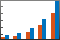
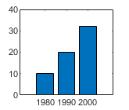
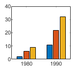
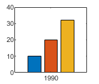
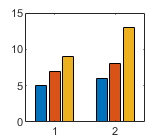
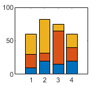
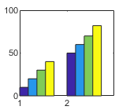
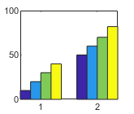

bar
Bar graph
- 
Syntax
Description
bar(___, specifies
the style of the bar groups. For example, use style)'stacked' to
display each group as one multicolored bar.
bar(___, specifies properties
of the bar graph using one or more name-value pair arguments. Only bar graphs that use the
default Name,Value)'grouped' or 'stacked' style support setting
bar properties. Specify the name-value pair arguments after all other input arguments. For
a list of properties, see Bar Properties.
Examples
y = [75 91 105 123.5 131 150 179 203 226 249 281.5]; bar(y)

Specify the bar locations along the x-axis.
x = 1900:10:2000; y = [75 91 105 123.5 131 150 179 203 226 249 281.5]; bar(x,y)

Since R2023b
Create a string vector x containing the names of four bars. Create a numeric vector y containing the lengths of the bars. Then create a bar chart of x and y.
x = ["Spring" "Summer" "Autumn" "Winter"]; y = [1 2 3 4]; bar(x,y)

Set the width of each bar to 40 percent of the total space available for each bar.
y = [75 91 105 123.5 131 150 179 203 226 249 281.5]; bar(y,0.4)

Display four groups of three bars.
y = [2 2 3; 2 5 6; 2 8 9; 2 11 12]; bar(y)

Display one bar for each row of the matrix. The height of each bar is the sum of the elements in the row.
y = [2 2 3; 2 5 6; 2 8 9; 2 11 12];
bar(y,'stacked')
Create a scalar x and a vector y. Display one stacked bar centered at x=2020. Each section in the stack corresponds to an element of y.
x = 2020;
y = [30 50 23];
b = bar(x,y,"stacked");
Adjust the width of the stacked bar. Because the individual bars are stacked, changing the width of one Bar object changes all of them.
b(1).BarWidth = 0.25;

Define x as a vector of three year values. Define y as a matrix that contains a combination of negative and positive values. Display the values in a bar graph.
x = [1980 1990 2000];
y = [15 20 -5; 10 -17 21; -10 5 15];
bar(x,y,'stacked')
One way to indicate categories for your bars is to specify X as a categorical array. The bar function uses a sorted list of the categories, so the bars might display in a different order than you expect. To preserve the order, call the reordercats function.
Define X as categorical array, and call the reordercats function to specify the order for the bars. Then define Y as a vector of bar heights and display the bar graph.
X = categorical({'Small','Medium','Large','Extra Large'});
X = reordercats(X,{'Small','Medium','Large','Extra Large'});
Y = [10 21 33 52];
bar(X,Y)
Since R2024b
Create a matrix vals that contains the values of two data sets. Display the values in a bar graph and specify an output argument. Since there are two data sets, bar returns a vector of two Bar objects.
x = [1 2 3]; vals = [2 3 6; 11 23 26]; b = bar(x,vals);

Display the height values, stored in the YData property, at the tips of the first series of bars.
b(1).Labels = b(1).YData;

Then label the second series of bars in the same way.
b(2).Labels = b(2).YData;

As an alternative to using the Labels property to specify bar labels, you can use the text function to create the labels and position them using the XEndPoints and YEndPoints properties.
Create a matrix vals that contains the values of two data sets. Display the values in a bar graph and specify an output argument. Since there are two data sets, bar returns a vector of two Bar objects.
x = [1 2 3]; vals = [2 3 6; 11 23 26]; b = bar(x,vals);

Display the height values at the tips of the first series of bars. Get the coordinates of the tips of the bars by getting the XEndPoints and YEndPoints properties of the first Bar object. Pass those coordinates to the text function, and specify the vertical and horizontal alignment so that the values are centered above the tips of the bars.
xtips1 = b(1).XEndPoints; ytips1 = b(1).YEndPoints; labels1 = string(b(1).YData); text(xtips1,ytips1,labels1,'HorizontalAlignment','center',... 'VerticalAlignment','bottom')

Next, display the values above the tips of the second series of bars.
xtips2 = b(2).XEndPoints; ytips2 = b(2).YEndPoints; labels2 = string(b(2).YData); text(xtips2,ytips2,labels2,'HorizontalAlignment','center',... 'VerticalAlignment','bottom')

You can display a tiling of bar graphs using the tiledlayout and nexttile functions. Call the tiledlayout function to create a 2-by-1 tiled chart layout. Call the nexttile function to create the axes objects ax1 and ax2. Display a bar graph in the top axes. In the bottom axes, display a stacked bar graph of the same data.
y = [1 2 3; 4 5 6]; tiledlayout(2,1) % Top bar graph ax1 = nexttile; bar(ax1,y) % Bottom bar graph ax2 = nexttile; bar(ax2,y,'stacked')

Create a bar graph using red bars.
y = [75 91 105 123.5 131 150 179 203 226 249 281.5];
bar(y,'r')
Set the bar interior color and outline color using RGB triplets. Set the width of the bar outline.
y = [75 91 105 123.5 131 150 179 203 226 249 281.5]; bar(y,'FaceColor',[0 .5 .5],'EdgeColor',[0 .9 .9],'LineWidth',1.5)

Control individual bar colors using the CData property of the Bar object.
Create a bar chart and assign the Bar object to a variable. Set the FaceColor property of the Bar object to 'flat' so that the chart uses the colors defined in the CData property. By default, the CData property is prepopulated with a matrix of the default RGB color values. To change a particular color, change the corresponding row in the matrix. For example, change the color of the second bar.
b = bar(rand(10,1));
b.FaceColor = 'flat';
b.CData(2,:) = [.5 0 .5];
Create a bar chart that uses colormap colors by setting the FaceColor property to 'flat'. Then set the CData property for each Bar object to an integer.
y = [1 3 5; 3 2 7; 3 4 2]; b = bar(y,'FaceColor','flat'); for k = 1:size(y,2) b(k).CData = k; end

Since R2023b
Named color palettes provide a convenient way to change the colors of a chart. This example compares a bar chart with three different color palettes.
Create a bar chart of random numbers using the default palette.
bar(rand(3,5))

Change the color palette to reef by using the colororder function.
colororder("reef")
Change the color palette to earth.
colororder("earth")
Create matrix y, where each column is a series of data. Call the bar function to display the data in a bar graph, and specify an output argument. The output is a vector of three Bar objects, where each object corresponds to a different series. This is true whether the bars are grouped or stacked.
y = [10 15 20; 30 35 40; 50 55 62]; b = bar(y);

Make the third series of bars green.
b(3).FaceColor = [.2 .6 .5];

Input Arguments
x-coordinates, specified as a scalar, vector, matrix, string
array, or cell array of character vectors. The values of x do not
need to be in order.
If you specify x as a string array or cell array of character
vectors, the values must be unique. MATLAB® stores the values as a categorical array, and the bars display in the
order you specify.
This table describes some common ways to present your data.
| Presentation | How to Specify X and Y | Example |
|---|---|---|
| Display one series of bars. | Specify |
x = [1980 1990 2000]; y = [10 20 30]; bar(x,y)

|
| Display multiple series of bars in groups. | Specify either of these combinations:
| x = [1980 1980 1980
1990 1990 1990];
y = [2 6 9
11 22 32];
bar(x,y)x = [1980 1990];
y = [2 6 9
11 22 32];
bar(x,y)

|
Display one group of bars centered at one x
value. | Specify |
x = 1990; y = [10 20 30]; bar(x,y)

|
Data Types: single | double | int8 | int16 | int32 | int64 | uint8 | uint16 | uint32 | uint64 | categorical | datetime | duration | string (since R2023b) | cell (since R2023b)
y-coordinates, specified as a scalar, vector, or matrix. This table describes some common ways to present your data.
| Presentation | How to Specify X and Y | Example |
|---|---|---|
| Display one series of bars. | Specify |
x = [1980 1990 2000]; y = [10 20 30]; bar(x,y)
|
| Display multiple series of bars in groups. | Specify either of these combinations:
| x = [1980 1980 1980
1990 1990 1990];
y = [2 6 9
11 22 32];
bar(x,y)x = [1980 1990];
y = [2 6 9
11 22 32];
bar(x,y)
|
Display one group of bars centered at one x
value. | Specify |
x = 1990; y = [10 20 30]; bar(x,y)
|
Data Types: single | double | int8 | int16 | int32 | int64 | uint8 | uint16 | uint32 | uint64 | duration
Bar width, specified as a fraction of the total space available
for each bar. The default of 0.8 means the bar
width is 80% of the space from the previous bar to the next bar, with
10% of that space on each side.
If the width is 1, then the bars within
a group touch one another.
Example: bar([1 2 3],0.5) creates bars that use 50% of the
available space.
Data Types: single | double | int8 | int16 | int32 | int64 | uint8 | uint16 | uint32 | uint64
Group style, specified by one of these values.
| Style | Result | Example |
|---|---|---|
| Display each group as adjacent bars that are centered around their
corresponding |

|
| Display each group as one multicolored bar. The length of a bar is the sum of the elements in the group. If |

|
| Display the bars in histogram format, in which the bars in a group touch one
another. The trailing edge of each group is aligned with the corresponding
Note A better way to display a histogram is to call the |

|
| Display the bars in histogram format. Each group is centered at the
corresponding Note A better way to display a histogram is to call the |

|
Bar color, specified as one of the options in this table.
| Color Name | Short Name | Appearance |
|---|---|---|
'red' | 'r' |
|
'green' | 'g' |
|
'blue' | 'b' |
|
'cyan'
| 'c' |
|
'magenta' | 'm' |
|
'yellow' | 'y' |
|
'black' | 'k' |
|
'white' | 'w' |
|
Axes object. If you do not specify an axes, then bar uses
the current axes for the bar graph.
Name-Value Arguments
Specify optional pairs of arguments as
Name1=Value1,...,NameN=ValueN, where Name is
the argument name and Value is the corresponding value.
Name-value arguments must appear after other arguments, but the order of the
pairs does not matter.
Before R2021a, use commas to separate each name and value, and enclose
Name in quotes.
Example: bar([10 20 30],'EdgeColor','g') specifies a green outline around
the bars.
The Bar properties listed here are only a subset.
For a complete list, see Bar Properties.
Note
The properties listed here are only a subset. For a complete list, see Bar Properties.
You can set these properties only on bar graphs that use the default
'grouped'or'stacked'style.
Outline color, specified as 'flat', an RGB triplet, a hexadecimal
color code, a color name, or a short name. If there are 150 bars or fewer, the default
value is [0 0 0], which corresponds to black. If there are more than
150 adjacent bars, the default value is 'none'.
Starting in R2017b, the 'flat' option uses the
CData values to color the edges. In previous releases, the
'flat' option colored the edges using colors from the
colormap.
For a custom color, specify an RGB triplet or a hexadecimal color code.
An RGB triplet is a three-element row vector whose elements specify the intensities of the red, green, and blue components of the color. The intensities must be in the range
[0,1], for example,[0.4 0.6 0.7].A hexadecimal color code is a string scalar or character vector that starts with a hash symbol (
#) followed by three or six hexadecimal digits, which can range from0toF. The values are not case sensitive. Therefore, the color codes"#FF8800","#ff8800","#F80", and"#f80"are equivalent.
Alternatively, you can specify some common colors by name. This table lists the named color options, the equivalent RGB triplets, and the hexadecimal color codes.
| Color Name | Short Name | RGB Triplet | Hexadecimal Color Code | Appearance |
|---|---|---|---|---|
"red" | "r" | [1 0 0] | "#FF0000" |
|
"green" | "g" | [0 1 0] | "#00FF00" |
|
"blue" | "b" | [0 0 1] | "#0000FF" |
|
"cyan"
| "c" | [0 1 1] | "#00FFFF" |
|
"magenta" | "m" | [1 0 1] | "#FF00FF" |
|
"yellow" | "y" | [1 1 0] | "#FFFF00" |
|
"black" | "k" | [0 0 0] | "#000000" |
|
"white" | "w" | [1 1 1] | "#FFFFFF" |
|
"none" | Not applicable | Not applicable | Not applicable | No color |
This table lists the default color palettes for plots in the light and dark themes.
| Palette | Palette Colors |
|---|---|
Before R2025a: Most plots use these colors by default. |
|
|
|
You can get the RGB triplets and hexadecimal color codes for these palettes using the orderedcolors and rgb2hex functions. For example, get the RGB triplets for the "gem" palette and convert them to hexadecimal color codes.
RGB = orderedcolors("gem");
H = rgb2hex(RGB);Before R2023b: Get the RGB triplets using RGB =
get(groot,"FactoryAxesColorOrder").
Before R2024a: Get the hexadecimal color codes using H =
compose("#%02X%02X%02X",round(RGB*255)).
Example: b = bar(1:10,'EdgeColor','red')
Example: b.EdgeColor = [0 0.5 0.5];
Example: b.EdgeColor = 'flat';
Example: b.EdgeColor = '#D2F9A7';
Fill color, specified as 'flat', an RGB triplet, a hexadecimal
color code, a color name, or a short name. The 'flat' option uses the
CData property value of the Bar object to
color the faces.
For a custom color, specify an RGB triplet or a hexadecimal color code.
An RGB triplet is a three-element row vector whose elements specify the intensities of the red, green, and blue components of the color. The intensities must be in the range
[0,1], for example,[0.4 0.6 0.7].A hexadecimal color code is a string scalar or character vector that starts with a hash symbol (
#) followed by three or six hexadecimal digits, which can range from0toF. The values are not case sensitive. Therefore, the color codes"#FF8800","#ff8800","#F80", and"#f80"are equivalent.
Alternatively, you can specify some common colors by name. This table lists the named color options, the equivalent RGB triplets, and the hexadecimal color codes.
| Color Name | Short Name | RGB Triplet | Hexadecimal Color Code | Appearance |
|---|---|---|---|---|
"red" | "r" | [1 0 0] | "#FF0000" |
|
"green" | "g" | [0 1 0] | "#00FF00" |
|
"blue" | "b" | [0 0 1] | "#0000FF" |
|
"cyan"
| "c" | [0 1 1] | "#00FFFF" |
|
"magenta" | "m" | [1 0 1] | "#FF00FF" |
|
"yellow" | "y" | [1 1 0] | "#FFFF00" |
|
"black" | "k" | [0 0 0] | "#000000" |
|
"white" | "w" | [1 1 1] | "#FFFFFF" |
|
"none" | Not applicable | Not applicable | Not applicable | No color |
This table lists the default color palettes for plots in the light and dark themes.
| Palette | Palette Colors |
|---|---|
Before R2025a: Most plots use these colors by default. |
|
|
|
You can get the RGB triplets and hexadecimal color codes for these palettes using the orderedcolors and rgb2hex functions. For example, get the RGB triplets for the "gem" palette and convert them to hexadecimal color codes.
RGB = orderedcolors("gem");
H = rgb2hex(RGB);Before R2023b: Get the RGB triplets using RGB =
get(groot,"FactoryAxesColorOrder").
Before R2024a: Get the hexadecimal color codes using H =
compose("#%02X%02X%02X",round(RGB*255)).
Starting in R2017b, the default value is an RGB triplet from the
ColorOrder property of the axes. In previous releases, the
default value was 'flat' and the colors were based on the
colormap.
Example: b = bar(1:10,'FaceColor','red')
Example: b.FaceColor = [0 0.5 0.5];
Example: b.FaceColor = 'flat';
Example: b.FaceColor = '#D2F9A7';
Color data, specified as one of these values:
RGB triplet — Single RGB color value applies to all bars.
Three-column matrix — One color per bar. Each row in the matrix specifies an RGB triplet for a particular bar.
Scalar — Single color applies to all bars, where the color comes from the colormap.
Vector — One color per bar. The colors come from the colormap.
By default, when you create a bar chart, the CData property
contains a three-column matrix of RGB triplets. You can change the color for a
particular bar by changing the corresponding row in the matrix.
This property applies only when the FaceColor or
EdgeColor property is set to 'flat'.
Example
Change the color for a particular bar by setting the FaceColor
property to 'flat'. Then change the corresponding row in the
CData matrix to the new RGB triplet. For example, change the
color of the second bar.
b = bar(1:10,'FaceColor','flat'); b.CData(2,:) = [0 0.8 0.8];

Line style of bar outlines, specified as one of the line styles in this table.
| Line Style | Description | Resulting Line |
|---|---|---|
"-" | Solid line |
|
"--" | Dashed line |
|
":" | Dotted line |
|
"-." | Dash-dotted line |
|
"none" | No line | No line |